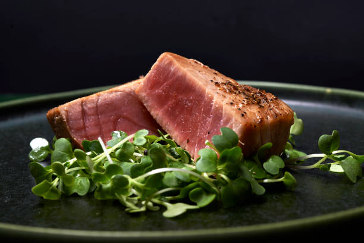

Tuna Steak

Description
For those who prefer and lighter and fresher protein, the Tuna Steak is a great alternative to beef! These juciy tuna steaks are a great summer dinner to enjoy! On top of that, they are low calorie and mostly protein, so they are also great for those who want something savory but not ruin their diet!
Ingredients:
- 2 Tuna Steak fillets/li>
- 2 Tbsp Sesame Oil
- 2 Tbsp Low Sodium Soy Sauce
- 1 Tbsp Worcestershire Sauce
- 1 Tbsp Black Pepper
- 1 Tbsp Garlic Powder
Steps:
- In a bowl, mix the liquids and spices together
- Place tuna steaks in a ziploc bag
- Pour the mixture into bag and shake well to coat the steaks thoroughly
- Let the steaks marinade in the refrigerator for 30 minutes
- After the 30 minutes, heat skillet on medium-high heat
- Slap the steaks on to the skillet; sear each side for 1 minute 40 seconds
- Pour the bag contents on top of the steak during the second sear for basting
- Plate the steaks
- Serve and Enjoy!